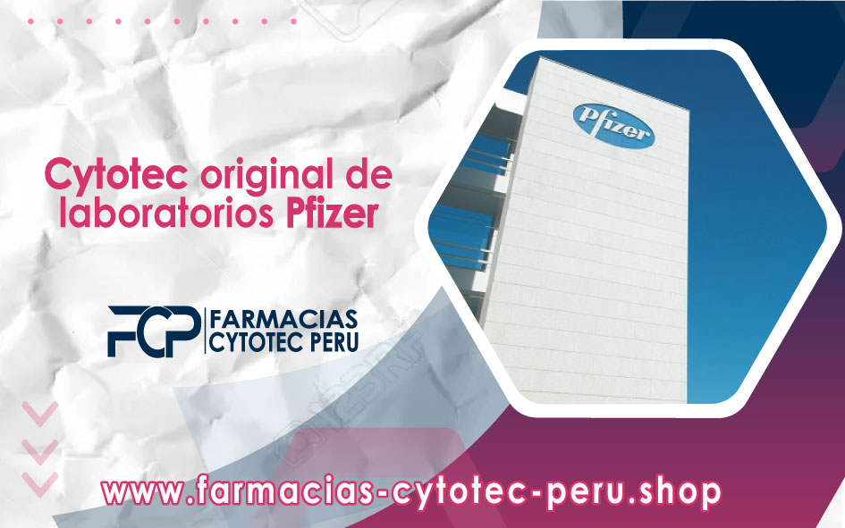

❤️ Cytotec original de laboratorios Pfizer 🥇
Laboratorios Pfizer se dedica al desarrollo y fabricación de productos de atención médica y vacunas. se funda En 1849 la empresa química Charles Pfizer and Company por Charles Pfizer y Charles Erhart. Cytotec cuyo compuesto activo es el misoprostol que proviene de una sustancia llamada PROSTAGLANDINA E1, que se encuentra en forma natural en el cuerpo de las personas. La PROSTAGLANDINA E1 participa en la ovulación, la fecundación del óvulo y el parto.
Cytotec Fue comercializado por primera vez en 1985 para el tratamiento de las úlceras en el estómago. Actualmente se sigue vendiendo para ese fin. Cytotec es un medicamento seguro y eficaz para el aborto hasta la semana 12 de embarazo. no se acumula en el cuerpo de las mujeres ni causa daño a su fertilidad; puede embarazarse nuevamente después de abortar con Cytotec. En la actualidad se usa también en hospitales para el tratamiento de aborto incompleto, para ayudar a inducir el parto y para tratar y prevenir la hemorragia post-parto. Debido a todos sus beneficios en la salud reproductiva de las mujeres, el Cytotec está incluido en la lista de medicamentos esenciales para la humanidad de la OMS, lo cual significa que todos los países deberían tenerlo en sus planes de salud.
Características que debes observar cuando compres Cytotec
Es de gran importancia conocer cuáles son las características físicas de las píldoras Cytotec de laboratorios Pfizer. Ya garantizan su autenticidad es fundamental, para asegurar su efectividad y sobre todo que no afecte tu salud
Las características de Cytotec de laboratorios Pfizer es muy peculiar lo que evitar confundir sus productos con los de otros laboratorios.
Las cajas de Cytotec.
- Presenta una paleta de colores entre blancos, azules en distintas tonalidades y un rosa
- Las abreviaturas de microgramo (mcg) se presenta en un tono rosa o magenta
- El color azul oscuro se encuentra en la parte superior de la caja donde se coloca el nombre del laboratorio dentro de un circulo blanco y debajo colocan una línea en tono azul claro
Los blísteres:
- Son de color metálico.
- El blíster de pastillas debe encontrarse totalmente sellado de manera hermética,
- las pastillas deben estar dentro de este
- el blíster usualmente en la parte trasera debe tener el nombre de Cytotec acompañado de un número de lote y la fecha de caducidad de las pastillas.
- Adicional debe tener la fecha de elaboración, la fecha de caducidad y el registro sanitario.
Las pastillas:
- También debe ser de forma hexagonal con 6 lados iguales.
- Tiene que ser biselada y con un surco en la mitad de la pastilla.
- debe tener el código 1461 perfectamente elaborado en cada pastilla.
Cytotec laboratorios Pfizer

Llevas unas semanas de atraso y te empieza a inquietar, tienes muchas metas y fines trazados que no deseas que se vean interrumpidos, lo cual menos esperas es que se deba a un embarazo no anhelado.
No tienes de qué preocuparte, en nuestra página contamos con un equipo enormemente preparado que te asesorará en estas situaciones, lo primero que se ofrece es realizarte una prueba de embarazo (test de orina, prueba de sangre, etc) el procedimiento que más comodante realice sentir, para que después tú determines qué quieres hacer con la gestación.
Recuerda que esta elección es solo tuya y de nadie más.
En caso escojas detenerlo, nuestros propios especialistas te tienen la posibilidad de beneficiarte a lo largo de el proceso garantizando tu estabilidad, el procedimiento a seleccionar más aconsejable es el farmacológico, que pone en menor peligro tu vida y es el más escogido por las mujeres.
Te ofreceremos la guía y cuidados necesarios que necesitas. Solo debes dejar un mensaje a cualquiera de nuestros números que aparecen en la parte baja (Whatsapp y Telegram) y nosotros te ayudaremos.
Como utilizar Cytotec

Al instante de usar las pastillas abortivas cytotec para abortar, puedes tener en cuenta que hay algunas maneras de tomarlo, así sea por vía oral o vaginal. Puede ingerirlo por vía oral a modo de píldora o introducirlo por vía vaginal a modo de supositorio. El procedimiento de aplicación puede perturbar, sin que ello modifique la efectividad del medicamento.
Este proceso solo te tomará generarlo en un aproximado de 12 horas, divididas en 3 dosis de 4 pastillas cada una. El procedimiento de consumo se puede alterar según instrucciones médicas o elección de la paciente. Todo dependerá de la previa charla que se tenga con el doctor a cargo.
Pastillas abortivas Cytotec - Contraindicación

Aunque hay muchas causas por las que las mujeres deciden abortar, una de las más frecuentes es que el embarazo está bastante avanzado.
Las pastillas abortivas cytotec son eficaces para interrumpir un embarazo, sin embargo hay varias contraindicaciones para su uso.
Es aconsejable no usar pastillas abortivas en caso de consumir esteroides, en caso se encuentre usando anticoagulantes (heparina, warfarina), en caso sea alérgica, lo que se determinará al utilizarla con antelación, debido a que no es viable decidir indicios adversos previo a su uso, si posees un trastorno hemorrágico, en caso de que la dama al desarrollarse el procedimiento del legrado tenga puesto el DIU, se propone tener mucha más grande precaución. Teniendo presente que los indicios al consumir el medicamento tienen la posibilidad de intensificar, es por esto que se ofrece retirarlo antecedente de comer los medicamentos.
El equipo conformado por nuestra página web, estamos a tu disposición. Tenemos la posibilidad de guiarte a decidir si este procedimiento es el ideal para ti.
Menstruación despues de un aborto con pastillas
Tras concluir un aborto (quirúrgico o farmacológico), el periodo fertil vuelve a iniciar, o sea, la época qué pasó a lo largo de ese aborto da inicio a un periodo completo. Iniciará a ovular pasado entre 9 a 11 días . O sea que si no se tiene el cuidado primordial, la dama puede volver a quedar embarazada con normalidad.
Nuestro equipo en este periodo ofrece un nuevo uso de pastillas(en caso ya lo probarás antes) o una elección por primera ocasión para personas que desconocían de dichos. Recuerda que puedes ir a un doctor de tu confianza, para consultar sobre el procedimiento que mejor se adecue a tu cuerpo humano.
Los indicios menstruales (sangrado y cólicos) los comenzarás a exponer 5 semanas desde el aborto.